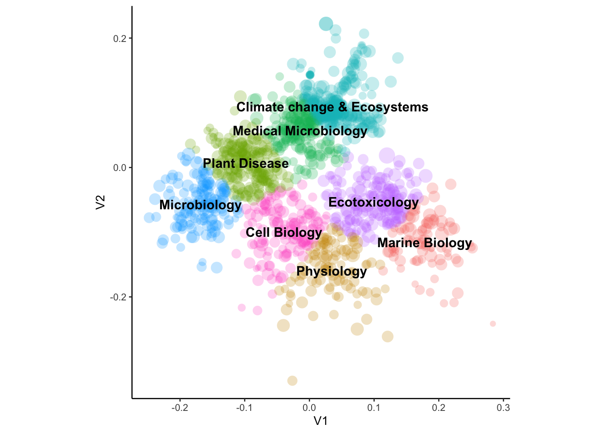
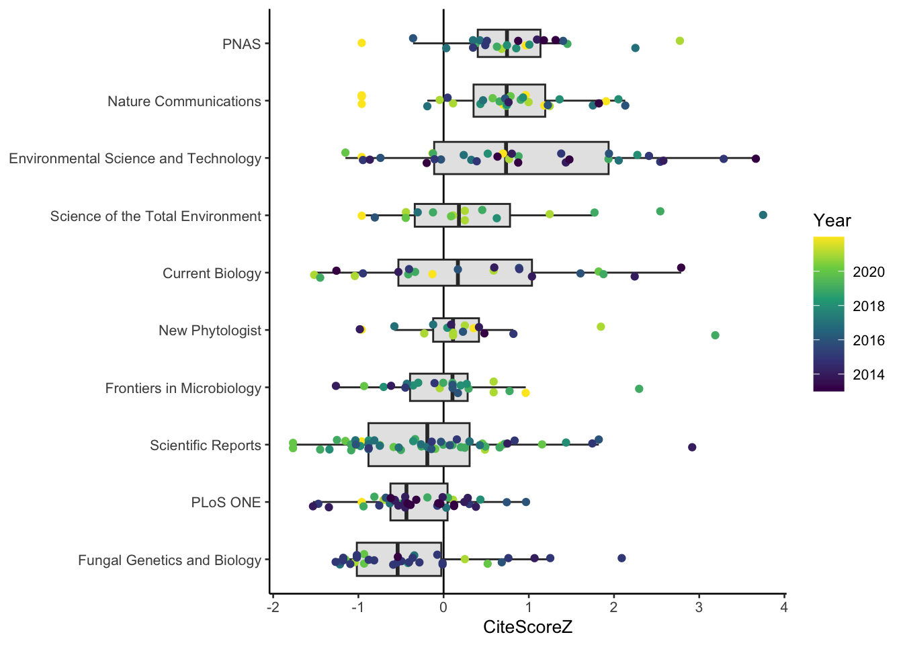

Biosciences Publications and Collaborations
Introduction
A bibliometric analysis of scientific publications from the Department of Biosciences was conducted to evaluate networks of UK and international partnership, funding sources, and determinants of publication quantity and citation rates.
Data
The bibliographic database Scopus (https://www.scopus.com) was interogated to obtain information on all publications with author Affiliation including “Biosciences” and author Affiliation city including “Exeter”, from years 2013 to 2022 inclusive. The information extracted from Scopus included Authors with their Affiliation, Title, Year of publication, Citations to date, Funding information including funding organizations, Keywords and bibliographic information including DOI. Affiliation text strings disaggregated into individual Affiliations per author, and only those publications including the Department of Biosciences (Streatham Campus) were retained. A small number of publications with more than 100 co-authors were omitted from further analysis. The final sample comprised 1537 publications.
Analysis
Collaborating institutions
Affiliation text strings were separated into individual affiliations per author, then unique affiliations retained per publication. The Department of Biosciences was represented by 584 unique strings, e.g. “Department of Biosciences, Faculty of Health and Life Sciences, Stocker Road, EX4 4QD, Exeter, United Kingdom”, “Biosciences, Faculty of Health and Life Sciences, University of Exeter, Exeter, United Kingdom”, etc. All Affiliation strings were passed to the Google Maps Geocode API for precise address and geographical (longitude, latitude) identification. Geographical locations for a small number of affiliations could not be identified using the Geocode API and were identified manually. In total 7369 affiliations were extracted and identified (Figure 1).
Collaborating Universities
The search term ‘Univers?’ (with ? denoting a wildcard to capture non-English language spellings) was used to identify University affiliations and extract the name of the University. In terms of number of publications the most important collaborating University overall is Bristol, followed by Oxford (Table 1). The University of California is the most important international collaborator (all campuses combined). Considering only single-partner publications (n = 298), only Utrecht (11), Heidelberg (5) and Universidad de Concepción (4) resulted in more than three publications. For the most recent three years (2019 - 2022), the most important partnerships did not differ substantially. California, Western Australia, British Columbia, Florida and Utrecht were most important (Table 2).
Table 1: University collaborators (top 10 UK and international), 2013-2022.
| University | n |
|---|---|
| Bristol | 88 |
| Oxford | 69 |
| Aberdeen | 47 |
| Cardiff | 40 |
| Warwick | 36 |
| Birmingham | 33 |
| Cambridge | 32 |
| Edinburgh | 32 |
| Newcastle | 28 |
| Southampton | 28 |
| University | n |
|---|---|
| California | 64 |
| Heidelberg | 30 |
| Western Australia | 29 |
| Utrecht | 28 |
| Medical Graz | 27 |
| British Columbia | 26 |
| James Cook | 25 |
| Aveiro | 20 |
| Universidad de Concepción | 19 |
| Dalhousie | 18 |
Table 2: Recent University collaborators (top 10 UK and international), 2019-2022.
| University | n |
|---|---|
| Bristol | 34 |
| Aberdeen | 32 |
| Oxford | 28 |
| Birmingham | 19 |
| Lancaster | 19 |
| Southampton | 18 |
| Edinburgh | 17 |
| Cambridge | 16 |
| Cardiff | 16 |
| East Anglia | 16 |
| University | n |
|---|---|
| California | 37 |
| Western Australia | 26 |
| British Columbia | 15 |
| Florida | 15 |
| Utrecht | 15 |
| Belgrade | 14 |
| James Cook | 13 |
| Oregon State | 10 |
| Universidad de Concepción | 9 |
| Crete | 8 |
Keywords
Author Keywords and Index Keywords were merged to obtain a single Keyword text string per publication. Keyword strings were processed to remove whitespace and converted to lower case for further analysis. Uninformative and extremely common keywords (“article”, “priority journal”, “controlled study”, “review”, “male”, “female”, “procedures”, “united kingdom”, “human”, “nonhuman”) were removed and common plural keywords (“animals”, “fungi”, “plants”, “mice”) converted to singular. Uncommon keywords appearing fewer than four times were removed. This left 3054 unique keywords for analysis.
Subject similarity among publications was visualized using a Principal Coordinates Analysis (PCoA) of Jaccard dissimilarities in keyword composition. There was little evidence for strong clustering in keywords, and any division of publications into separate themes is somewhat artificial (Figure 2).

Citations
The number of Citations per publication \(c\) was highly skewed and increased non-linearly with publication age (Figure 3).
A standardized relative citation score (\(C_s\)) was therefore calculated by log transformation and normalization to the mean and standard deviation of log-transformed citations per publication in each year:
\[ C_s = \frac{C-\bar{C}}{s} \] where \(C = \log(c+1)\), \(\bar{C}\) is the annual mean of \(C\) and \(s\) is the annual standard deviation of \(C\).
Funding
Funding text strings were disaggregated to identify individual funders. No funding source was listed for 396 publications. The most important funder overall is BBSRC, while the most important international funders are the European Commission (via the 7th Framework Programme, Horizon 2020 and ERC) and the NSF (Table 3).
| Funder | n |
|---|---|
| biotechnology_and_biological_sciences_research_council, bbsrc | 389 |
| natural_environment_research_council, nerc | 303 |
| university_of_exeter | 172 |
| medical_research_council, mrc | 133 |
| wellcome_trust, wt | 116 |
| seventh_framework_programme, fp7 | 94 |
| horizon_2020_framework_programme, h2020 | 70 |
| engineering_and_physical_sciences_research_council, epsrc | 63 |
| national_science_foundation, nsf | 52 |
| european_research_council, erc | 51 |
Journals
Biosciences papers were published in over 500 different journals. However, only 52 journals published more than 10 papers. Of the ten most important papers in terms of numbers of publications, PNAS, Nature Communications and Environmental Science and Technology received the most scientific attention in terms of citations (Figure 4).
